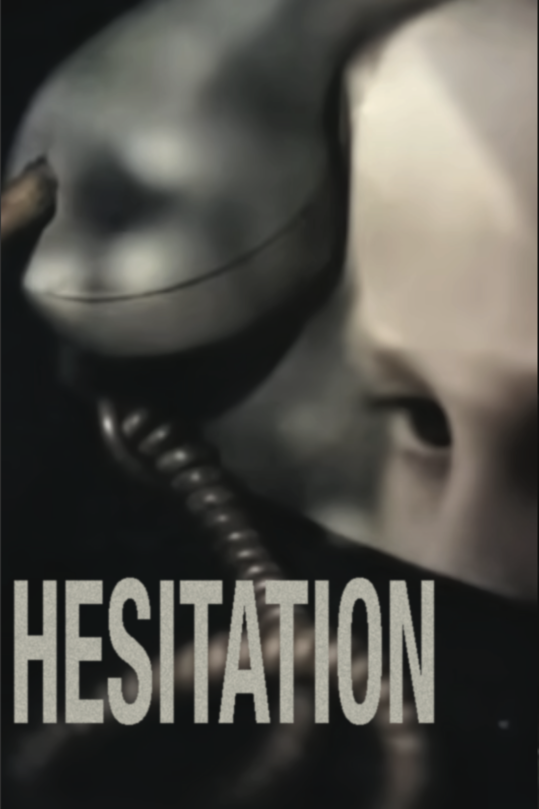

Made using a combination of Adobe Illustrator, Photoshop and InDesign this design aims to establish a visual hierarchy in its composition. The eye is intended to first notice the arm, then the watering can shape, or the organic line. This piece also explores the creation of shapes through angle and line.
This design features a made up magazine website, advertising its newest issue. This design features sharp contrast and bold type while also experimenting with line.


This design features a made up magazine website, advertising its newest issue. This design features sharp contrast and bold type while also experimenting with line.
The following designs are a collection of screen captures from the opening credits scenes of TV shows( Dexter, The Night Manager, West World, The Making of A Murderer, and True Detective) each paired with a word. The goal of these designs was to understand how the different ratios of elements create different compositional interactions. The text is an additional element meant to enhance the image in a meaningful way, blending typography and imagery into a seamless message.
